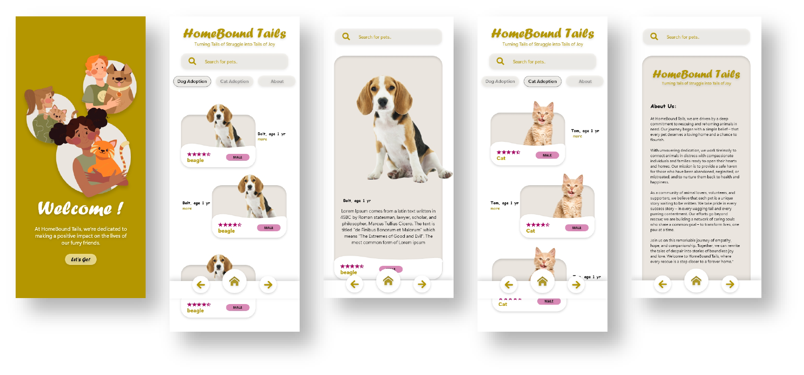

Project Introduction:
HomeBound Tails mobile application, a compassionate platform dedicated
to dog and cat adoption. HomeBound Tails is not just an app; it's a
mission-driven project designed to connect loving families with furry
companions, transforming tales of struggle into tales of joy. This
documentation will provide insights into the app's goals, features,
and functionalities, highlighting its significance in the world of pet
rescue and adoption.
Design Images

Website Goal
The primary goal of the HomeBound Tails website is to create a
welcoming and user-friendly online environment for individuals seeking
to adopt dogs and cats while also providing an informative platform
about our organization.
The prototype of the HomeBound Tails mobile application is an early-stage digital
representation of our vision for a user-friendly and compassionate pet adoption
platform. Designed with the intention of transforming the lives of both animals
and humans, this prototype showcases key features and functionalities that make
HomeBound Tails a unique and impactful app.
Implementation Details
Dog Adoption:
Our website aims to facilitate dog
adoption by offering a comprehensive database of rescue dogs available
for adoption. Users can easily browse profiles, view images, and read
descriptions to find their perfect canine companion. We strive to match
families with dogs that suit their lifestyles and preferences, ultimately
providing safe and loving forever homes.
Cat Adoption:
Similar to our dog adoption section, we offer a dedicated
space for cat lovers to explore and adopt rescue cats. Our platform showcases
a variety of feline friends, from playful kittens to mature cats. It's a place
where individuals can discover the purrfect addition to their households, knowing
they are giving a homeless cat a second chance at happiness.
About Us Page:
The "About Us" section of our website serves a crucial role in
establishing trust and transparency with our audience. It provides essential
information about HomeBound Tails, including our mission, values, history, and the
dedicated team behind the scenes. This page showcases our commitment to animal
welfare, our vision for the future, and how users can get involved, whether through
volunteering, donations, or other means of support.